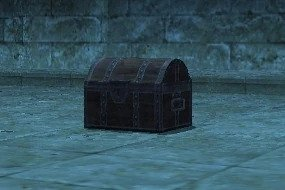

Level 75 reference · Zenith rules
|
Zone |
Level |
Drops |
Steal |
Spawns |
Notes |
|
55-60 |
6 |
A, H, M | |||
|
HP = Detects Low HP; M = Detects Magic; Sc = Follows by Scent; T(S) = True-sight; T(H) = True-hearing JA = Detects job abilities; WS = Detects weaponskills; Z(D) = Asleep in Daytime; Z(N) = Asleep at Nighttime | |||||


Image source
Notes:
- Looks like a regular Treasure Chest when not engaged.
- Will spawn from a regular Treasure Chest when examined or by aggroing to sound.
- Will aggro regardless of level.
Adapted from Eden Wiki: Treasure Chest (Monster) · Contributors and history · CC BY-SA 4.0. Revision 13815. Layout, links and optional background text adapted for Zenith.